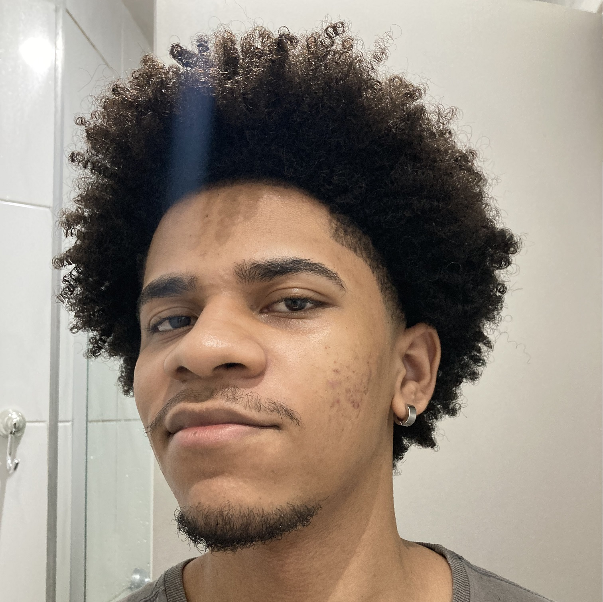

 Flávio Farias
Flávio Farias (
oFurabio
) é um desenvolvedor independente de jogos e aplicações web com experiência de estágio em multinacional e matérias dedicadas ao sucesso de seus jogos.
Veja o trailer do jogo
PROJETO: ÁTOMO
abaixo.
Se quiser você também pode
JOGAR
o jogo abaixo!
<a href="https://ofurabio.itch.io/projeto-atomo">Jogue Projeto: Átomo no itch.io</a>